A practical introduction to epidemiological inference in
Centre for Computational Evolution,
The University of Auckland, New Zealand

The University of Auckland, New Zealand
21st International Bioinformatics Workshop on
Virus Evolution and Molecular Epidemiology
Seoul, Republic of Korea, 2016
Virus Evolution and Molecular Epidemiology
Seoul, Republic of Korea, 2016
Outline
Part 1
- Epidemiolgically relevant models in BEAST 2
- Other new features of BEAST 2
Part 2
- Tutorial 1: Inferring geographical Influenza dynamics
- Tutorial 2: Inferring dynamics of Egyptian HCV
BEAST 2 Usage Patterns
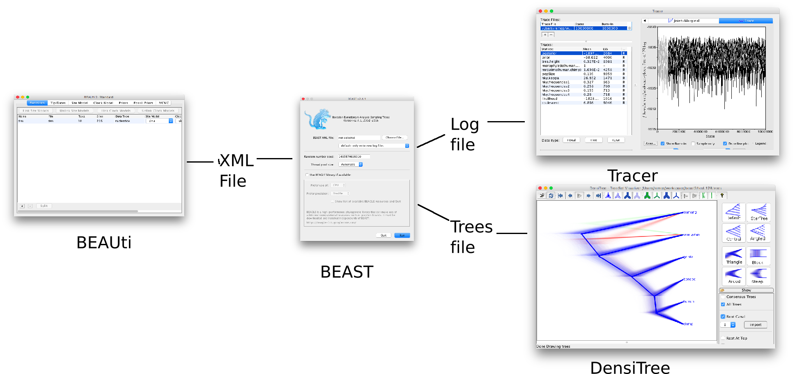
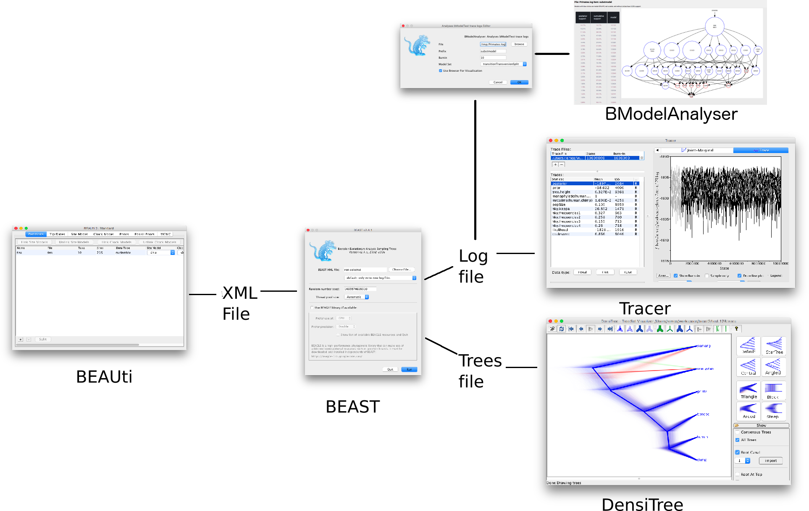
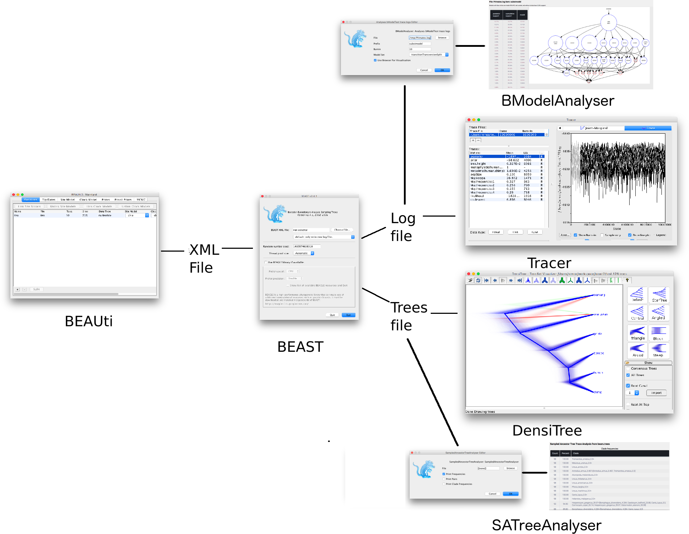
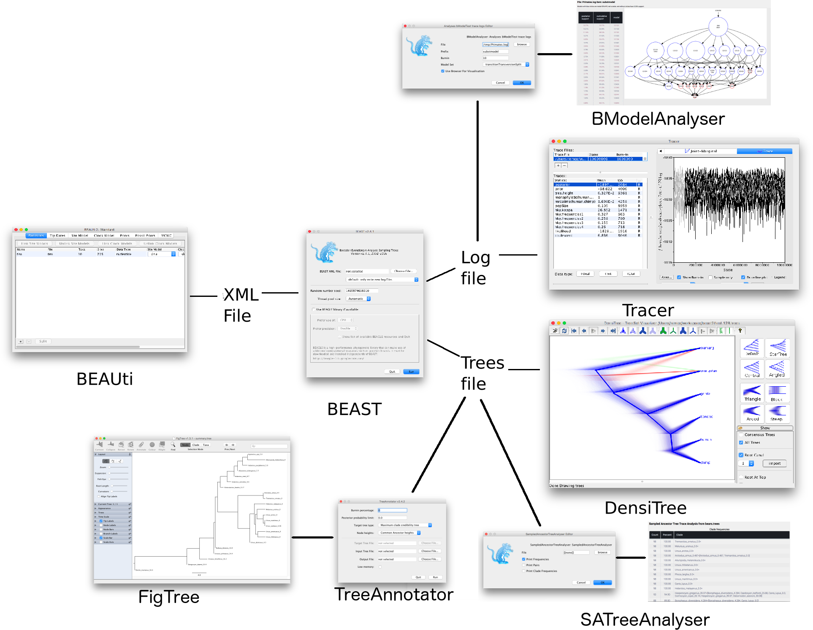
BEAST 2 Packages
- Packages contain much of the utility of BEAST 2.
- Packages are accessible via the built-in Package Manager. To access this, open BEAUti and select Manage Packages from the File menu.
The number of available packages is growing!
Overview of epidemiologically relevant models in BEAST 2
Birth-death skyline model
- Piecewise-constant rate variation of the Birth/Death model parameters.
- Since effective reproductive number $R_e=\lambda/\delta$ can infer variation in $R_e$.
- Has been used to recover the effect of contaminated injections on the Egyptian HCV epidemic.
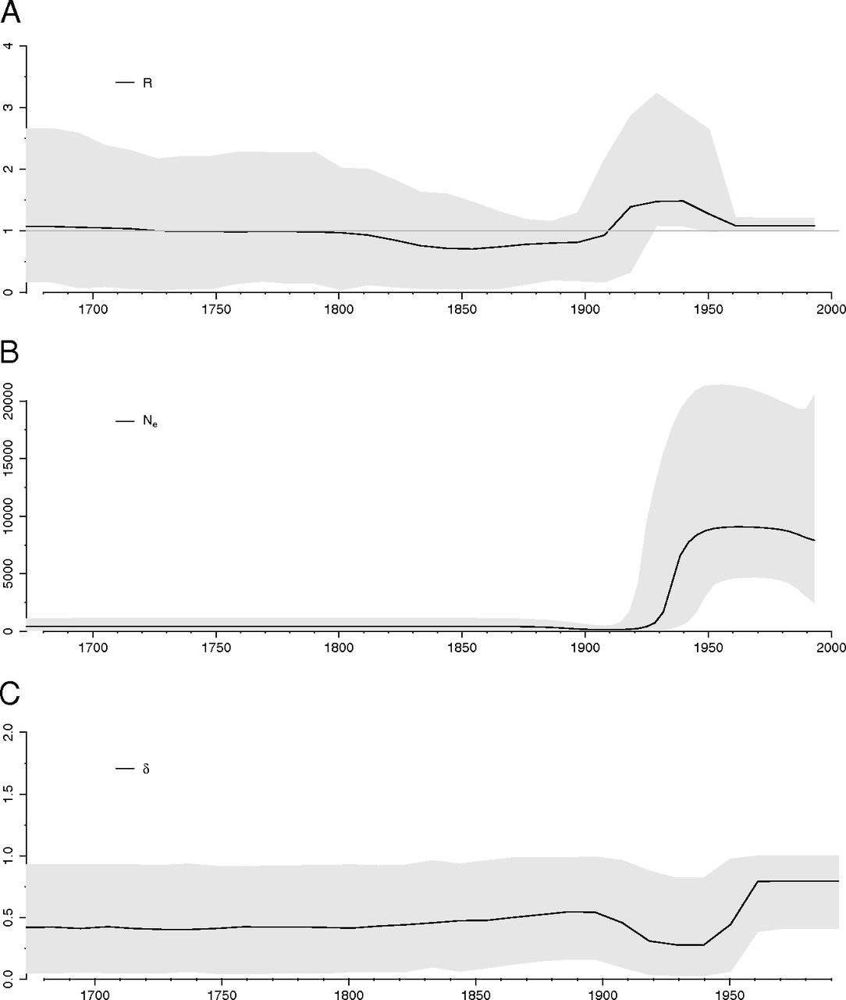
Stadler et al., PNAS (2012)
BEAST 2 Package: BDSKY
Birth-death SIR model
- Parametric extension to the BDSKY model.
- Piecewise constant variation in birth and death rates driven by discretized stochastic SIR model:
Birth-death SIR model
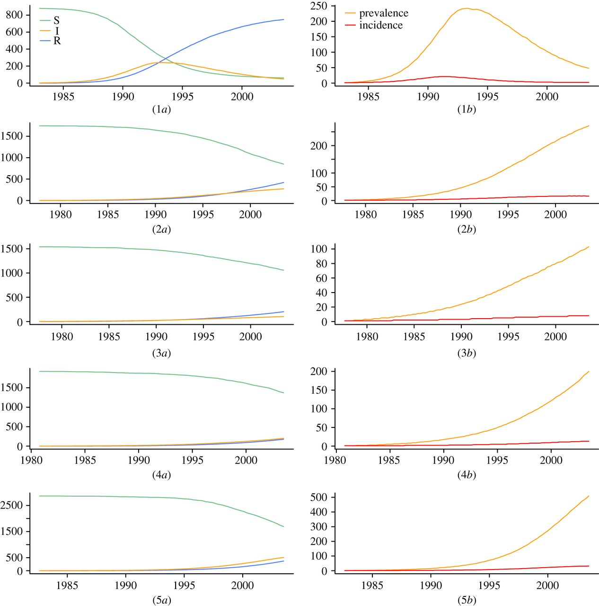 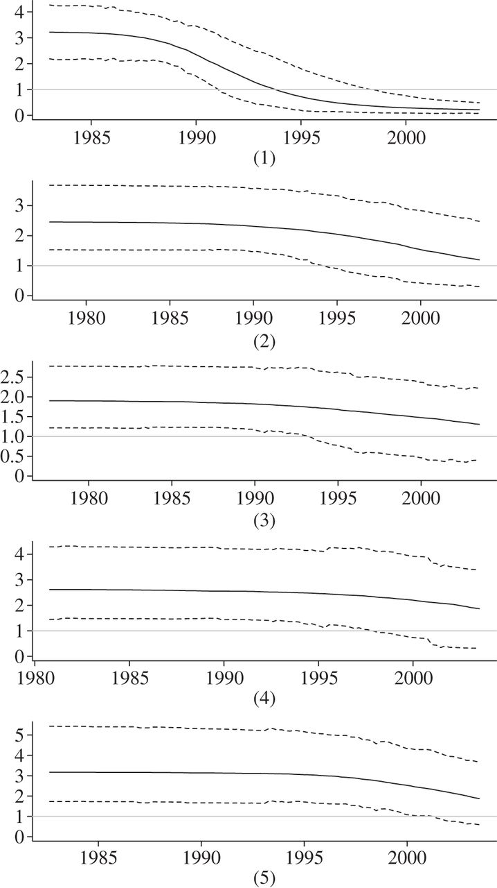SIR curves, prevalence and $R_e$ of UK HIV-1 clusters. Kuehnert et al., JRS Interface, 2014
BEAST 2 Package: phylodynamics
Structured Coalescent
- A simple means of modelling population structure in phylogenetic inference.
- Assumes population is divided into constant-sized sub-populations with migration between them.
- Model gives rise to trees coloured by ancestral locations.
- Properly conditions on sample locations without introducing bias De Maio et al, PLoS Genetics, 2015
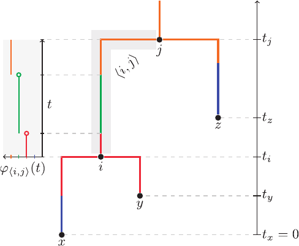
Vaughan et al., Bioinf. (2014)
Structured Coalescent
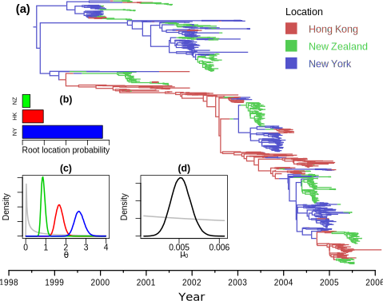Ancestral locations, subpop sizes and substitution rate inferred from H3N2 genomes. (Vaughan et al., Bioinf. 2014)
BEAST 2 Package: MultiTypeTree
Approximate structured coalescent
- Computational burden of SC analyses restricts total number of demes.
- Recent approximation by De Maio et al. raises the practical limit from ~4 to ~10.
- Example analyses include phylogeography of Tomato Yellow Leaf Curl Virus (TYLCV), involving 8 distinct locations.
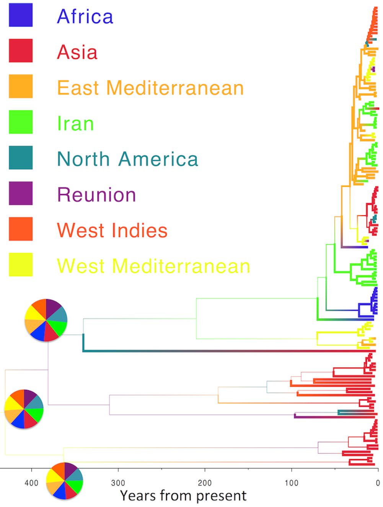
De Maio et al., PLoS Genetics, 2016
BEAST 2 Package: BASTA
Birth-death Migration Model
- Versatile structured stochastic model based on the BDSKY model.
- Can usefully model both spatial structuring of host population as well as structuring due to infection classes (e.g. exposed vs infectious).
- Like the BDSKY model, supports piecewise-constant rate variation.
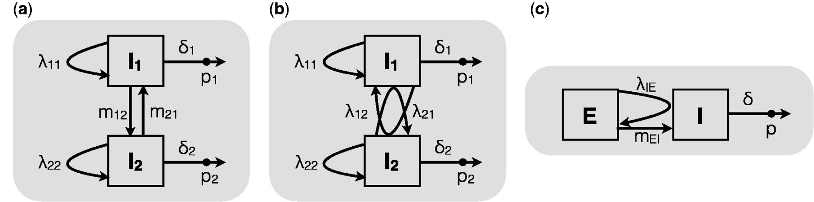
Kuehnert et al., MBE, 2016
Birth-death Migration Model
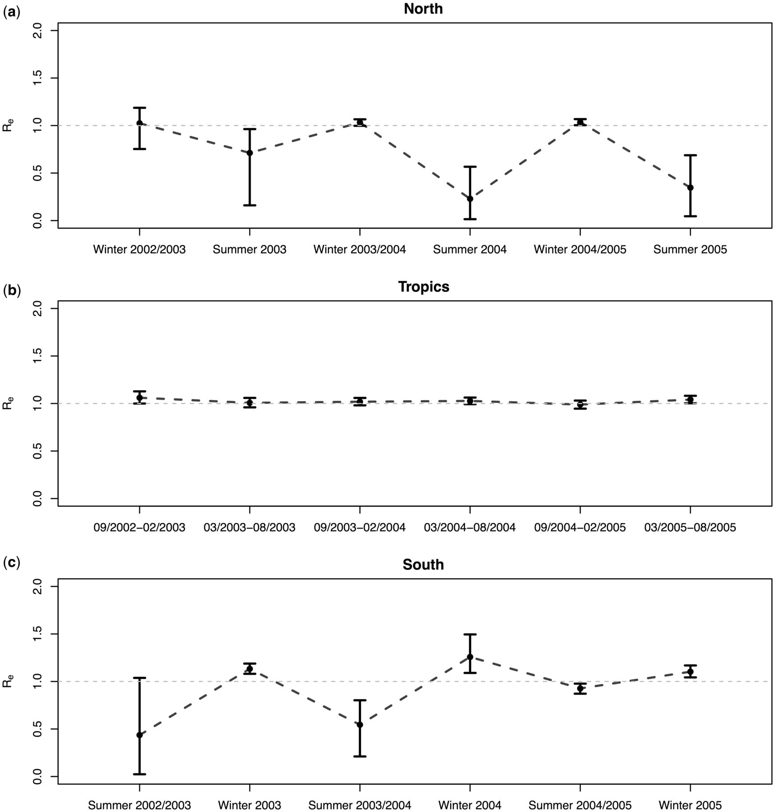Spatial and temporal variation in effective reproductive
number of H3N2.
BEAST 2 Package: BDMM
ClonalOrigin Model
- Coalescent-based model developed by Didelot et al. (Genetics, 2010) to describe homologous gene conversion in bacterial populations.
- Implementation in BEAST 2 allows joint inference of the clonal frame, recombinations and model parameters including the recombination rate, using a variety of substitution models and priors.
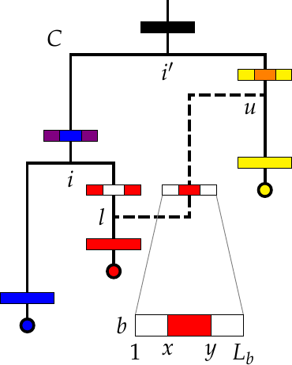
Vaughan et al., bioRxiv:059105
ClonalOrigin Model
- Application to rMLST genes sequenced from E. coli samples collected in rural New Zealand indicates gene flow from pathogenic to non-pathogenic strains.
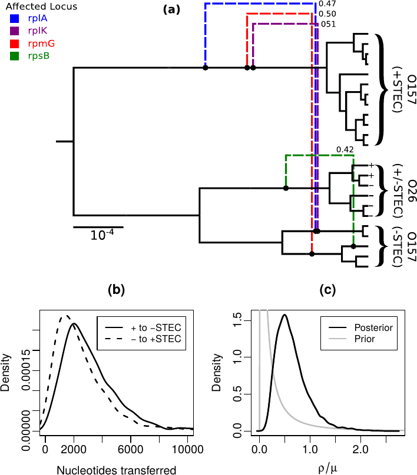
Vaughan et al., bioRxiv:059105
BEAST 2 Package: bacter
Sampling of other new features in BEAST 2
Bayesian substitution model selection
Bayesian model averaging over:
- Substitution model
- Rate parameters
- Estimated/equal frequencies
- With/without gamma rate variation
- With/without invariant sites
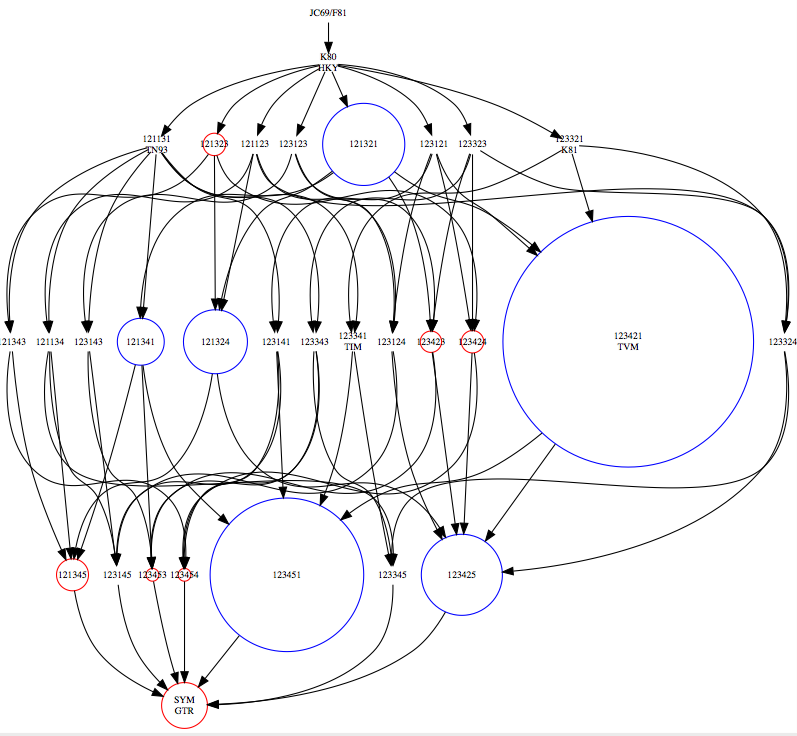
Bouckaert & Drummond, bioRxiv:020792
BEAST 2 Package: bModelTest
Improved support for heterotachy
- Single $\Gamma$ site model.
- Multi $\Gamma$ site model: one shape param $\alpha$ per branch
- Relaxed $\Gamma$ site model: sample $\alpha$ from distribution
- Better fit for many models.
- Significantly different root ages.
Algae/green plants age
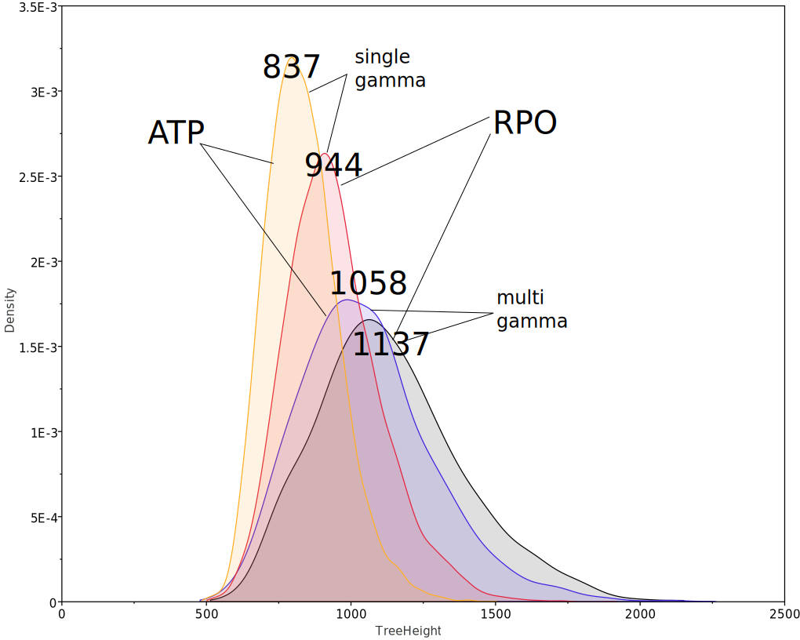
Bouckaert & Lockhart, bioRxiv:018101
BEAST 2 Package: MGSM
Fossilised Birth Death model
- Named for its macroevolutionary application, this is also applicable to the combination of genetic and incidence-only data in phylodynamic analyses.
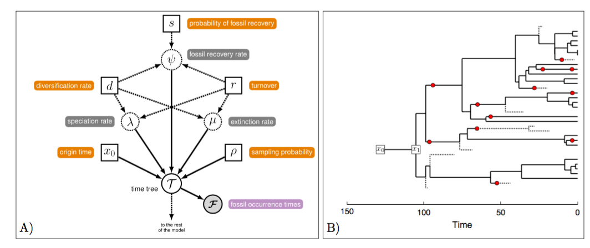
Gavryushkina et al., PLoS Comp Bio. 2014
BEAST 2 Package: SA
Likelihood computation efficiency
- No overhead when using invariant sites category.
- Be sure to use threads!
- Use BEAGLE library with -beagle_SSE option.
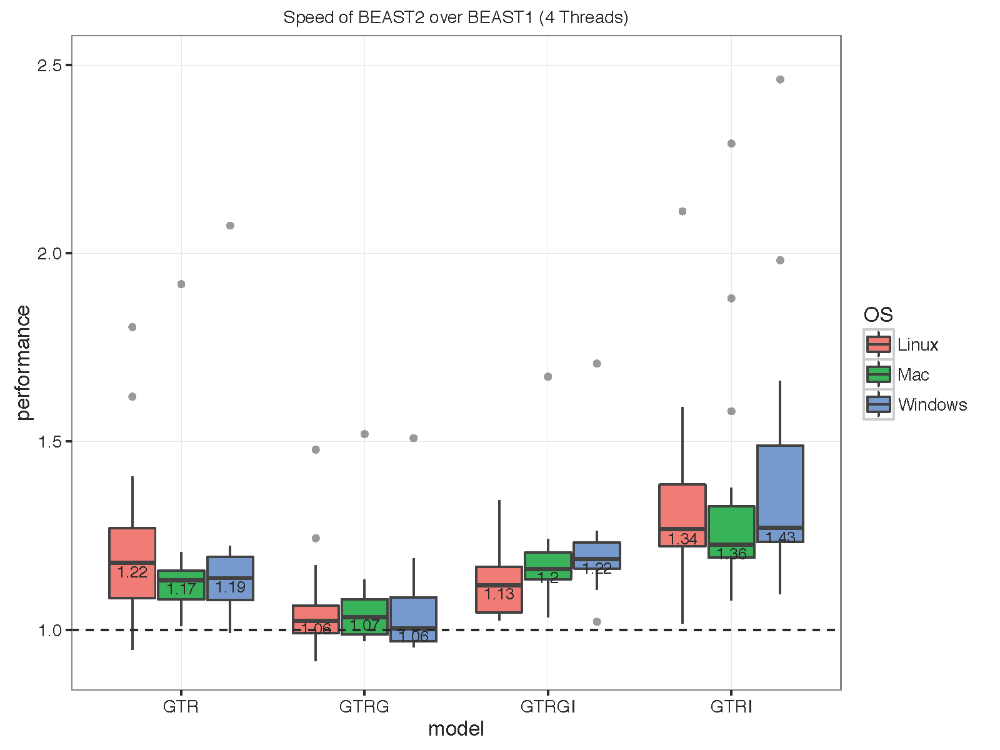
BEAST 2 Package: All packages!
Tutorials
Tutorial 1:
Geographical Influenza dynamics
Instructions:
- Locate the tutorial at github.com/tgvaughan/MultiTypeTree/wiki/Beginner's-Tutorial-(short-version)
- Follow along with me!
Tutorial 2:
Global dynamics of RSVA
Instructions:
(Note: we might not complete this tutorial due to time constraints.)
- Download the tutorial archive from tgvaughan.github.io/talks/VEME2016/SkylineTutorial.zip
- Extract the contents of this archive.
- Open the file Skyline.pdf with a PDF viewer.
- Follow along with me!